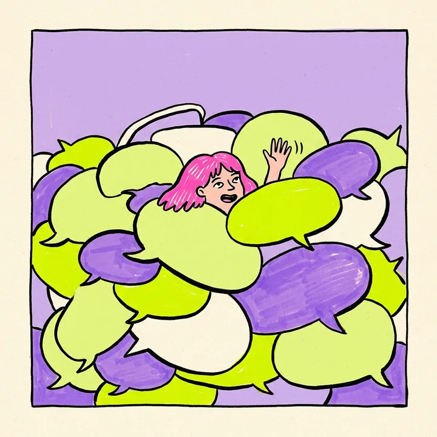
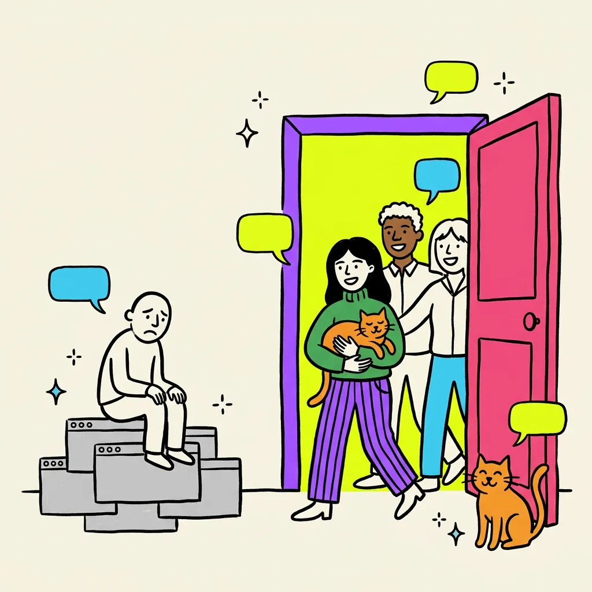
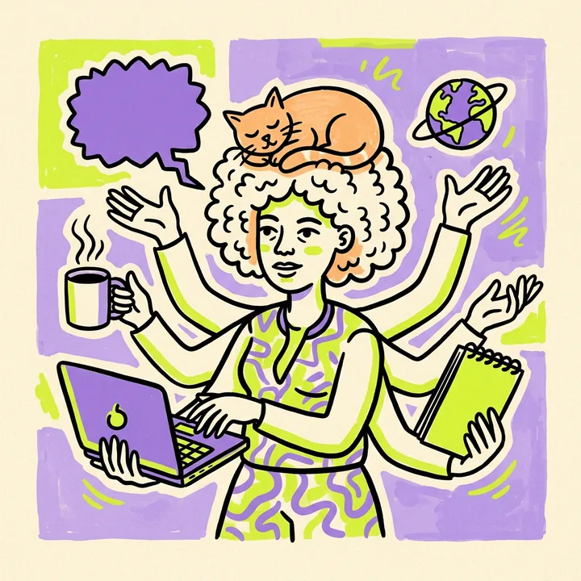
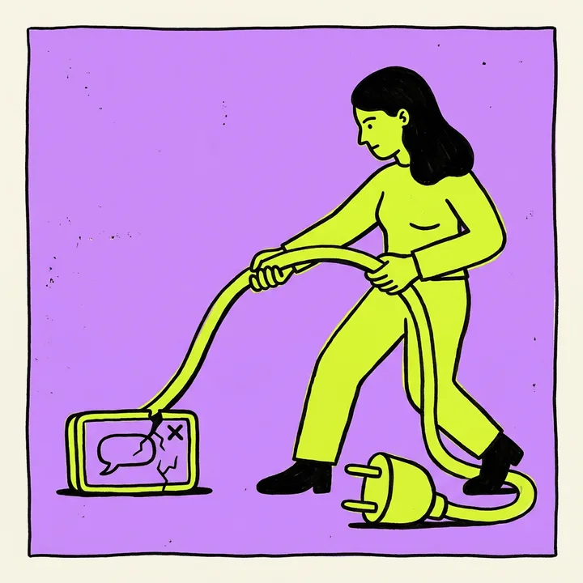
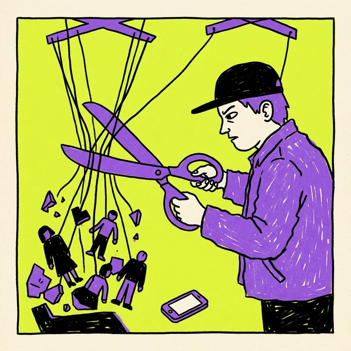
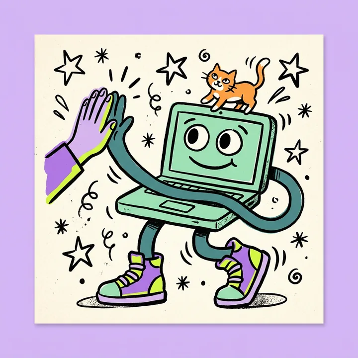
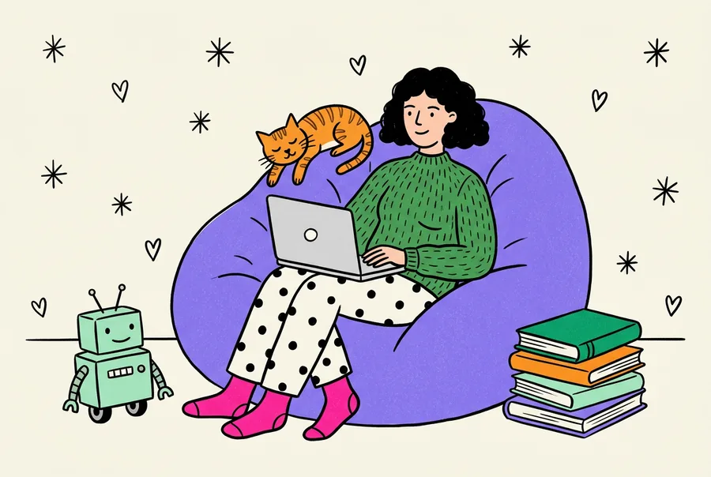
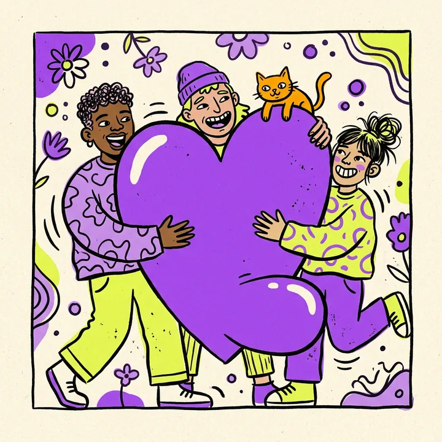
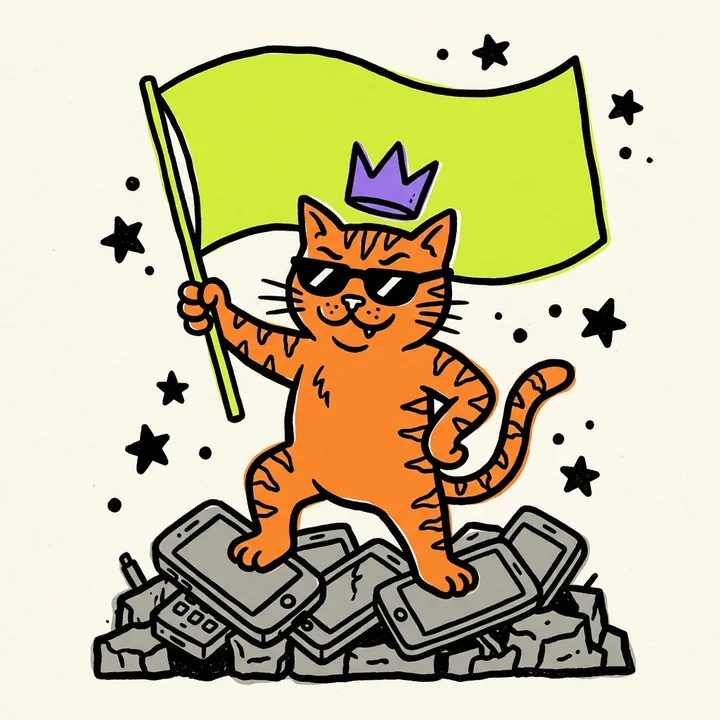

Вопрос тонет за пять минут
Пока человек ждал ответа, сверху прилетели сорок стикеров и опрос про пиццу.
Миндальная связь превращает переписку сообщества в помощника для каждого участника. Он находит ответ в истории, зовёт того, кто разбирается, и ведёт вопрос, пока задача не решена.


Пока человек ждал ответа, сверху прилетели сорок стикеров и опрос про пиццу.

В личке, по третьему кругу. Остальные молчат: они просто не видели вопроса.

Она точно была. Год назад, Карл. Где-то выше.

Сегодня чат есть, а завтра его закрыли, и вместе с ним пропали годы разговоров.
Так выглядит чат в обычный вторник. Потом за дело берётся бот.
На каждый вопрос бот присылает одну карточку и обновляет её, пока человек не получит ответ.
меньше стресса,В группе или боту в личку. Обычными словами, без команд и тегов.
И отвечает цитатой: кто написал, когда и где. Иногда история подсказывает человека, который знает.
Вопрос оказался твёрдым орешком? Бот позовёт того, кто его расколет. Зовёт только тех, кто сам вызвался помогать, и объясняет, почему именно их. «Не сейчас» можно сказать без последствий.
Человек отмечает, что помогло, и благодарность приходит тому, кто ответил. Карточка остаётся в памяти сообщества для следующего, кто спросит.
После подключения бот прочитает историю чата и соберёт вопросы, которые так и остались без ответа. Администратор увидит их первым и решит, что с ними делать.

Участники сами отмечают, в чём разбираются. Бот зовёт их точечно, учитывает тихие часы, а после двух отказов подряд сам предложит передохнуть.
«Не сейчас» без обид
Если на вопрос никто не ответил, он попадает в Пульт администраторов этого сообщества. Познакомить человека с нужным знатоком можно в одно касание.
Пульт сообщества
Подружите своё сообщество с соседним. Если у вас нет нужного специалиста, к ним уйдёт только текст вопроса, без имени. Контакты откроются, когда согласятся обе стороны.
Помощь ходит, люди остаются домаCRM помнит записи. Чат помнит шум. Миндальная связь помнит, кто что знает и куда идёт вопрос.

Платформы меняются.
Связь остаётся.
а помощь ходит между сообществами, пока участники остаются дома ♡на случай, если платформа скажет «Галя, у нас отмена!»
История, темы и знатоки сообщества в открытом формате. В любой день, без звонков и заявок.
Решили переехать? Бот разошлёт участникам новый адрес, чтобы никто не потерялся.
Одна кнопка показывает всё, что бот хранит о человеке. Вторая это удаляет.
Подключите бота и посмотрите, сколько вопросов в сообществе закроется само. Он щёлкает их как орешки: профессиональная деформация.
Добавить бота может администратор группы. Остальным он покажет кнопку «Подключить» для админа.
Без демо-фокусов: каждая функция с честной пометкой.
Ищем сообщества, где вопросы задают чаще, чем успевают отвечать.
В группе бот молчит, пока его не спросят. Если хотите, он будет подсказывать, что на вопрос уже отвечали: это включается одной командой.
Только группы, куда его добавили. Каждый участник может посмотреть, что о нём хранится, и удалить это командой /forget_me. Новичкам бот в двух строках объясняет, что хранится и как это стереть.
Добавьте бота в группу, где вы администратор, и он подключится сам. Приветствие новичков, подсказки и срок хранения истории можно поменять в настройках, но это необязательно.
Пока идёт бета, бесплатно. Условия после пилота обсудим с каждым сообществом отдельно, а решение остаётся за вами.
Внутри сообщества вопрос видят те, кого бот позвал на помощь, и администраторы. В сообщество-партнёр уходит только текст, без имени, и только с разрешения автора. Контакты открываются, когда согласны обе стороны.
Участники остаются в вашем чате. Бот живёт там, где уже живёт сообщество, и никуда людей не переманивает.
Список людей остаётся у вас. Даже сообществу-партнёру уходит только текст вопроса, без имени и только с разрешения автора.
Никакой рекламы ни в группе, ни в личке. Бот пишет, когда это экономит кому-то время.
Заберёте всю историю одним файлом и разошлёте участникам новый адрес. Без звонков и заявок.
Организатор незаменим. Бот забирает вопросы, которые задают в пятый раз, и у организатора остаётся время на людей, встречи и ту самую пиццу.
Конечно. Мы подождём. Ждун тоже подождёт.
Он внизу справа. Погладьте его, он немного знает о вашем чате.
Одно касание, и следующий вопрос в чате получит ответ. Вжух.